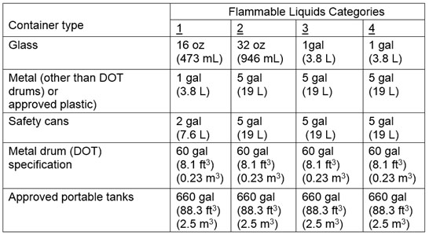

09.B Flammable Liquids
09.B.18–09.B.23
09.B.18 Storage areas/tanks shall be surrounded by a curb, earthen dike or other equivalent means of containment of at least 6 in (15 cm) in height and higher as needed to contain the contents in the event of a leak.
- Other secondary containment methods that are approved by the EPA or USCG can be used in lieu of curbs or dikes (double-walled tanks, etc.).
- When dikes or curbs are used, provisions shall be made for draining off accumulations of ground or rain water or spills of flammable liquids.
- Drains shall terminate at a safe location and shall be accessible to operation under fire conditions. If fuel and oil storage areas are subject to the provisions of 40 CFR 112 (Spill Prevention Control and Countermeasures), those provisions shall apply as well.
TABLE 9-1
Maximum Allowable Size of Portable Containers and Tanks for Flammable Liquids

NOTE: Flammable liquid means any liquid having a flashpoint at or below 199.4°F (93°C). Flammable liquids are divided into four categories as follows:
Category 1 shall include liquids having flashpoints below 73.4°F (23°C) and having a boiling point at or below 95°F (35°C).
Category 2 shall include liquids having flashpoints below 73.4°F (23°C) and having a boiling point above 95°F (35°C).
Category 3 shall include liquids having flashpoints at or above 73.4°F (23°C) and at or below 140°F (60°C). When a Category 3 liquid with a flashpoint at or above 100°F (37.8°C) is heated for use to within 30°F (16.7°C) of its flashpoint, it shall be handled in accordance with the requirements for a Category 3 liquid with a flashpoint below 100°F (37.8°C).
Category 4 shall include liquids having flashpoints above 140°F (60°C) and at or below 199.4°F (93°C).When a Category 4 flammable liquid is heated for use to within 30°F (16.7°C) of its flashpoint, it shall be handled in accordance with the requirements for a Category 3 liquid with a flashpoint at or above 100°F (37.8°C).
09.B.19 Where liquids are used or handled, provisions shall be made to promptly and safely dispose of leakage or spills.
09.B.20 Flashlights and electric lanterns used while handling flammable liquids shall be listed by a nationally recognized testing laboratory for the intended use.
09.B.21 Dispensing flammable liquids - general.
- All pumping equipment used for the transfer of Category 1 or 2 flammable liquids or Category 3 flammable liquids with a flashpoint below 100°F (37.8°C) shall be listed by a nationally recognized testing laboratory or approved by, and labeled or tagged in accordance with, the Federal agency having jurisdiction, such as the DOT.
- Dispensing systems for Category 1 or 2 flammable liquids or Category 3 flammable liquids with a flashpoint below 100°F (37.8°C) shall be electrically bonded and grounded. All fuel tanks, hoses, and containers of 5 gal (18.9 L) or less shall be kept in metallic contact while flammable liquids are being transferred; transfer of flammable liquids to containers in excess of 5 gal shall be done only when the containers are electrically bonded.
- Flammable liquids shall be drawn from, or transferred into, vessels, containers, or tanks within a building or outside only through a closed piping system, from safety cans, by means of a device drawing through the top, or from a container, or portable tanks, by gravity or pump, through an approved self-closing valve. Transferring by means of air pressure on the container or portable tanks is prohibited.
- Areas in which flammable liquids are transferred in quantities greater than 5 gal (18.9 L) from one tank or container to another, shall be separated from other operations by at least 25 ft (7.6 m) or a barrier having a fire resistance of at least 1 hour. Drainage or other means shall be provided to control spills. Natural or mechanical ventilation shall be provided to maintain the concentration of flammable vapor at or below 10% of the lower flammable limit.
- Dispensing units shall be protected against collision damage by suitable means and permanent dispensing units shall be securely bolted in place.
- Dispensing nozzles and devices for Category 1 or 2 flammable liquids or Category 3 flammable liquids with a flashpoint below 100°F shall be listed.
- Lamps, lanterns, heating devices, small engines, and similar equipment shall not be filled while hot: these devices shall be filled only in well ventilated rooms free of open flames or in open air and shall not be filled in storage buildings.
- Dispensing devices shall be in all cases at least 20 ft (6 m) from any activity involving fixed sources of ignition.
09.B.22 Service and refueling areas.
- Dispensing hoses shall be listed. Dispensing nozzles shall be an approved automatic-closing type without a latch-open device.
- Equipment using flammable liquids as fuel shall be shut down during refueling, servicing, or maintenance, except for emergency generators. Waiver requests may be reviewed and granted by the local SOHO for operations in remote sites or regions where cold weather conditions pose a significant risk when equipment fails to restart (copy provided to CESO).
- Dispensing of Category 1 or 2 flammable liquids or Category 3 flammable liquids with a flashpoint below 100°F (37.8°C) from tanks of 55 gal (0.20 m3) capacity or more shall be by listed pumping arrangement. Transferring by air pressure on the container or portable tank is prohibited.
- Clearly identified and easily accessible switch(es) shall be provided at a location remote from dispensing devices to shut off the power to all dispensing devices in an emergency.
- A listed emergency breakaway device designed to retain liquid on both sides of the breakaway point shall be installed on each hose dispensing Category 1 or 2 flammable liquids or Category 3 flammable liquids with a flashpoint below 100°F (37.8°C) liquids.
09.B.23 Tank cars/trucks.
- Tank cars/trucks shall be spotted and not loaded or unloaded until brakes have been set and wheels chocked.
- Tank cars/trucks shall be attended for the entire time they are being loaded or unloaded. Precautions shall be taken against fire or other hazards.
- Tank cars/trucks shall be properly bonded and grounded while being loaded or unloaded. Bonding and grounding connections shall be made before dome covers are removed on tank cars/trucks and shall not be disconnected until such covers have been replaced. Internal vapor pressure shall be relieved before dome covers are opened.
{kind=link}